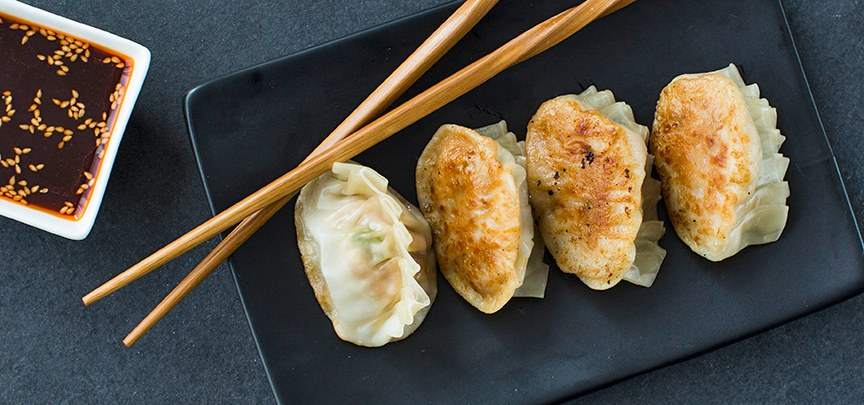

Gyoza / dumplings met kip
In dit recept zie je met stap voor stap hoe je deze heerlijke dumplings (ook wel gyoza genoemd) inclusief dipsaus makkelijk zelf maakt!
Ingrediënten
- 30 Gyoza vellen
- 300 gr kippendijen
- 3 lente uien
- 4 shiitake paddenstoelen
- 100 gr spitskool
- 2 tenen knoflook
- 4 cm gember
- 1 theelepel sesam olie
- 1 eetlepel sojasaus
- 1 eetlepel mirin
- ½ theelepel witte peper
- ½ theelepel zout
- Zonnebloemolie om in te bakken
- Water
Dipsaus
- 2 eetlepels sojasaus
- 1 theelepels sesamolie
- ½ theelepel pittige saus zoals Shiracha (naar smaak)
- ½ eetlepel honing
- 1 theelepel sesamzaadjes
Materialen
Bereidingswijze
- Snijd de kippendijen in kleine stukjes, zodat het bijna gehakt is. Bewaar de kip in een kom en voeg hier geraspte gember en knoflook aan toe. Hak de shiitake en lente uien in kleine stukjes en de spitskool in reepjes. Voeg dit aan de kip toe en breng op smaak met sesamolie, sojasaus, mirin, zout en witte peper. Wil je de smaak even proeven? Bak dan een klein beetje van de vulling, zo kun je de smaak nog aanpassen.
- Nu kan het vullen van de gyoza beginnen. Neem een vel en leg deze in de palm van je hand. Voeg hierbij een theelepel van het mengsel in het midden van het vel. Maak de randen nat met een beetje water. Vouw de gyoza nu dicht door de onderkant op de bovenkant te leggen. Goed aanduwen. Nu kun je een mooi randje maken door plooitjes te vouwen in de rand. Je kunt hier ook een apparaatje (dumpling maker) voor gebruiken. Herhaal dit tot de vulling op is.
- Het garen van de gyoza’s gaat als volgt: verhit wat zonnebloem olie in een wokpan. Bak de onderkant van de gyoza’s zachtjes aan. Voeg nu een scheutje water aan de pan toe en leg de deksel er op. Nu kunnen de gyoza’s gaar stomen. Na ongeveer 5 minuten haal je de deksel van de pak en bak je de onderkant van de dumplings nog even krokant. De dipsaus maak je door de ingrediënten goed met elkaar te mengen.

Tip 1: Gyoza vellen kun je bij Aziatische toko’s kopen (diepvries) en bij sommige filialen van AH.
Tip 2: Mirin is een Japanse zoete kookwijn gemaakt van rijst, een echte smaakmaker.